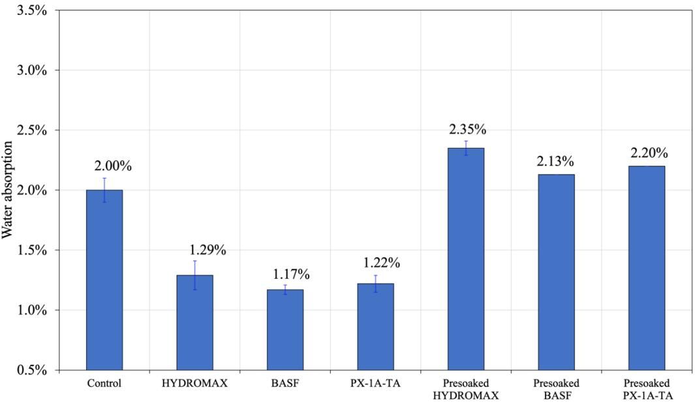
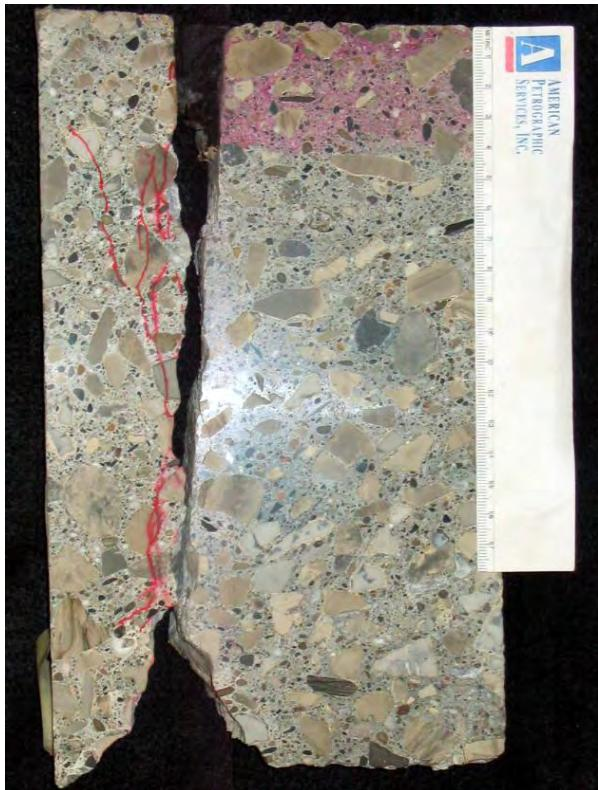
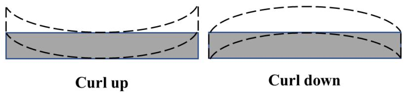
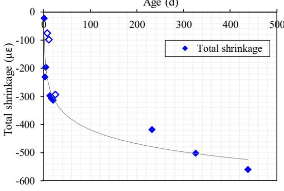
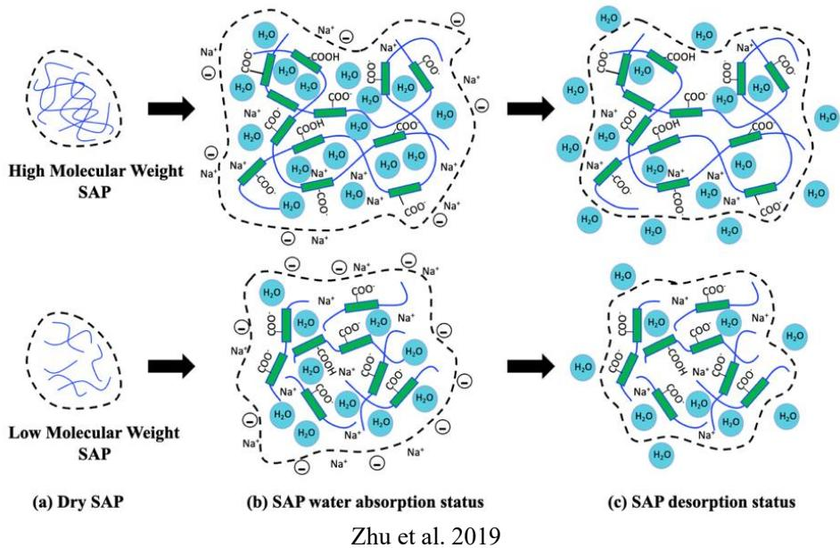
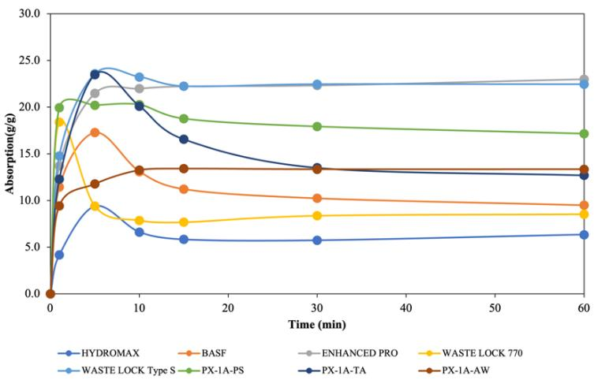
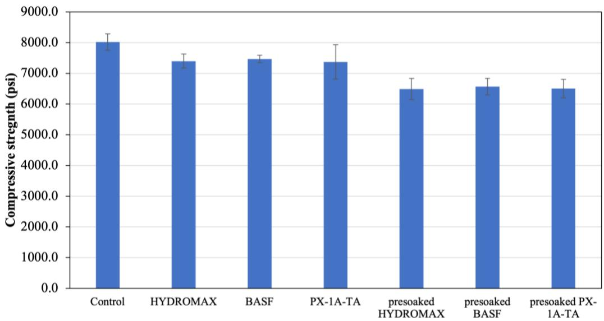
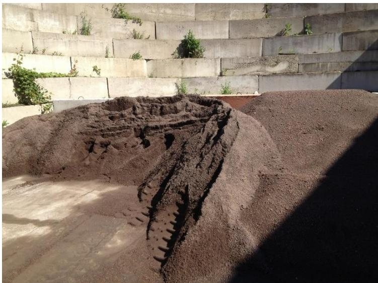
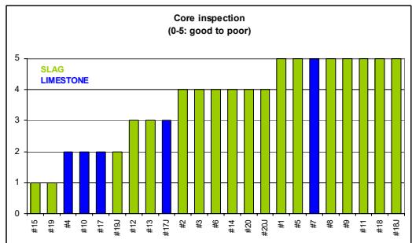
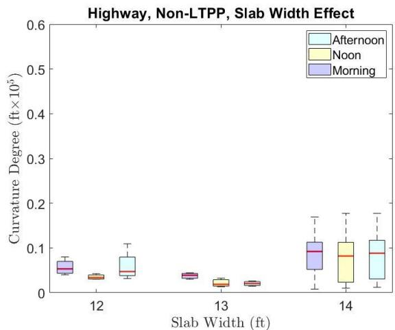

Lightweight Aggregate
Lightweight aggregate is a type of aggregate with lower density than conventional aggregates, reducing the unit weight of structural concrete to approximately 90–115 lb/ft³ (1440–1840 kg/m³) [1]. This reduction in density enables significant decreases in dead load on bridge decks and high-rise structures compared to normal-weight concrete [1], while also providing internal water reservoirs for curing when saturated.
Sources (11)
Overview of Lightweight Aggregates
Lightweight aggregate represents an important material technology for enhancing concrete performance through internal curing.
Types: Fine vs. Coarse Aggregate
Lightweight Coarse Aggregate
- Used to reduce concrete density
Physical Properties and Water Absorption
Lightweight aggregates possess a lower density than conventional aggregates and feature a porous structure capable of absorbing water, with a high absorption capacity when saturated. Their gradation is compatible with concrete mix requirements, and they provide sufficient strength for structural applications. The physical characteristics of lightweight aggregates, including shape, texture, moisture content, and gradation, significantly influence the packing and bonding characteristics of coarse aggregates as well as the rheological properties of concrete mixes [1]. Furthermore, the modulus of elasticity is decreased in internally cured concrete, which leads to reduced stresses under shrinkage strains [2].
In latex-modified concrete, the hydration mechanism involves a polymer-cement co-matrix phase where cement hydration products and polymer films interpenetrate to form a monolithic network that coats aggregate particles [3]. Regarding water management, the absorption capacity of superabsorbent polymers can reach up to 29 g/g using the tea bag method, though internal curing requirements calculated from the Bentz equation may demand higher effective capacities [4].

shows the water absorption of concrete cylinder specimens that were cured for 14 days and then immersed in tap water after processing. Figure 3.18. Water absorption of concrete mixtures [4]Internal Curing Mechanism
- Used for internal curing applications
- Saturated before mixing to provide water reservoirs
- Less common for internal curing purposes
LWFA is superior to coarse LWA for internal curing because it provides improved particle spacing at lower aggregate substitutions, enabling more rapid fluid draw and uniform water distribution throughout the paste. This results in better freeze-thaw resistance compared to using coarse lightweight aggregates. [5]
- Controlled release of water during hydration
- Maintains internal water reservoirs for extended periods
Water Reservoir Mechanism
- LWFA particles are saturated before mixing
- Particles are uniformly distributed throughout concrete
- As concrete dries, water is released from pores
- Water promotes continued hydration
- Benefits entire concrete volume, not just surface
When lightweight slag aggregate is dry at the time of batching, it absorbs mixing water and deprives adjacent cement particles of hydration water, which compromises both strength development and porosity characteristics. [6]

High water-cement ratio and cracking left half of the cold joint [6]The internal curing benefit relies on fully saturated pores to promote extended cement hydration beyond normal curing periods, which increases concrete strength and reduces permeability. [6]
The primary goal of internal curing is to maintain early-age concrete internal moisture above 90% by replacing about 20% to 25% of the fine aggregate with saturated lightweight fine aggregate. [2]
When internal curing water is drawn from porous lightweight aggregates by negative capillary pressure during evaporation, the rigid structure of the aggregate allows for water displacement without deformation, unlike early-age concrete which behaves as a weak solid and cracks under excessive moisture loss. [7]
The replacement of evaporated capillary water with internal curing water stored in lightweight aggregates stops the buildup of excessive negative pressure and prevents air infiltration into the pore system, both of which contribute to plastic shrinkage cracking. [7]
 Onset and rate of plastic shrinkage cracking for Specimens 0-0, 7.5K-0, and 15K-0 [7]
Onset and rate of plastic shrinkage cracking for Specimens 0-0, 7.5K-0, and 15K-0 [7]
Internal curing with pre-wetted lightweight fine aggregates alters the moisture gradient distribution within concrete pavement slabs, reducing the differential drying that typically causes upward warping and curling stresses. [8]

Schematic of curling in PCC pavements [8]Moisture gradients in concrete slabs vary dramatically up to a depth of about 2 inches, with the top layer experiencing the most significant changes in saturation levels compared to deeper areas. [8]
 Diurnal slab curvature [8]
Diurnal slab curvature [8]
In latex-modified concrete (LMC), lightweight fine aggregates can be employed as internal curing agents to mitigate shrinkage cracking associated with rapid strength gain and high early-age shrinkage. [3]

Shrinkage test results of LMC-VE specimens [3]Superabsorbent polymers function through a physico-chemical sorption process that differs from the purely physical water storage mechanism found in lightweight aggregates. [4]

Sorption kinetic behaviors of SAP with different molecular weights [4]The desorption rate of superabsorbent polymers is a critical performance factor as it dictates the timing and volume of water released to the cement paste during hydration. [4]

Absorption of various SAPs in cement pore solution [4]Internal curing water is typically estimated at 7 lbs per 100 lbs of cementitious materials to match chemical shrinkage, with volume replacement levels often around 30% for aggregates with approximately 20% absorption. The prewetted state requires a minimum 48-hour sprinkling period followed by 12-15 hours of drainage to achieve stable absorbed moisture content. [5]
Superabsorbent polymers (SAPs) can be mixed with raw concrete materials before water addition, facilitating uniform dispersion without the need for pre-saturation timelines required by lightweight fine aggregate. [4]

shows the compressive strength results of all concrete mixtures at 28 days, including those made with dry and presoaked SAPs. Figure 3.17. 28-day strength of concrete mixtures [4]Performance Benefits and Durability
Internal curing maintains concrete workability while providing curing benefits, making it suitable for structural applications where weight reduction is beneficial. This process reduces damage associated with alkali-silica reaction (ASR) by providing space to accommodate ASR gel and altering pore solution composition through dilution; furthermore, it increases freeze-thaw performance while maintaining similar strength levels compared to conventional concrete [5]. As measured by thermal gravimetric analysis, internal curing can increase the calcium silicate hydrate (C-S-H) content by approximately 20% at 28 days compared to conventional mixes [2]. These methods offer several performance benefits, including reduced autogenous shrinkage, improved hydration efficiency, enhanced durability properties, lower permeability, and a reduced cracking risk.
 Conventional curing compared to internal curing [5]
Conventional curing compared to internal curing [5]
Additionally, internal curing significantly enhances the performance of supplementary cementitious materials (SCMs) by promoting more efficient hydration of the cementitious system, which can allow for reductions in cement content and a lower carbon footprint [9]. Regarding pavement behavior, concrete pavements with higher modulus of elasticity, higher coefficient of thermal expansion (CTE), and lower thermal conductivity exhibit significantly higher curling stress under similar temperature gradients [8].
Mix Design and Proportioning Considerations
A typical replacement involves using 20-30% by mass of fine aggregate, a process that does not increase the initial water-to-cement ratio. While a 20% replacement is common for internal curing, a 30% replacement offers enhanced benefits but may affect properties; conversely, higher levels result in diminishing returns and potential workability issues. To accommodate LWFA, proportioning adjustments should include reducing sand content while maintaining total aggregate content, adjusting water content as needed, and ensuring proper saturation before mixing. Replacing 20% to 30% of fine aggregate with lightweight material does not dramatically affect mechanical properties but improves permeability, resulting in a low potential for cracking based on average stress rate values [9].

LWFA pile before mixing at central mix plant [9]Regarding additive usage, the dosage of superabsorbent polymers typically ranges from 0.3% to 0.6% of binder mass and must be determined based on product-specific absorption rates rather than fixed volume replacements [4].
Material Sourcing and Quality Requirements
Reports from construction sites indicated that storing and preconditioning the LWFA would be a challenge in larger applications, though otherwise no significant changes were observed [10]. Manufacturers of these materials include those producing expanded shale, clay, and slate products, manufactured lightweight aggregates, and specialized internal curing materials. To meet quality requirements, these materials must possess a consistent particle size distribution, adequate absorption capacity, sufficient structural integrity, and compatibility with concrete chemistry. However, lightweight blast furnace slag aggregates can contain metal inclusions, which may initiate corrosion products that fill microcracks and contribute to concrete deterioration [6].

(b). Core-determined concrete pavement condition showing type of coarse aggregate [6]Laboratory and Field Performance Evidence
The unit weight and stiffness of internal curing mixtures are slightly lower than conventional controls, while the elapsed time to reach peak temperature remains largely unaffected [9]. High-performance concrete utilizing lightweight fine aggregate for internal curing can achieve compressive strengths significantly exceeding standard structural requirements while simultaneously reducing member weight by approximately 5% compared to conventional concrete mixes [11]. Laboratory studies have demonstrated improved compressive strength development, reduced permeability measurements, enhanced surface resistivity, and lower stress rates in shrinkage testing. In field applications, such as bridge deck construction, there have been multiple successful implementations involving long-term performance monitoring and comparison with conventional concrete. Specifically, internal curing concrete bridge decks exhibit adequate composite section behavior with transverse load distribution and strain magnitudes similar to normal-weight concrete decks [9]. Furthermore, internal curing can extend the predicted service life of concrete structures by approximately 18.7 to 20 years compared to conventional mixtures [9].
The inclusion of LWFA did not affect maturity [10], and based on field and laboratory results, using LWFA improved the concrete hydration for about one month after placing [10]. The internal curing was found to improve the degree of hydration over time [10], and using LWFA appeared to improve the degree of hydration in both mixture designs [10]. For both mixture designs, the IC samples maintained a higher temperature than the CC samples after the first few hours, which is consistent with previous observations that mechanical properties were enhanced, likely due to increased hydration of the IC systems [10]. Additionally, the IC samples showed higher surface resistivity at ages greater than 7 days indicating improved hydration, despite the samples being stored in a moist environment [10], and using LWFA improved the surface resistivity for both mixture designs [10]. The permeability of the mixture containing LWFA was also found to be improved—potentially increasing the longevity of the pavements [10].
 Compressive strength test results [10]
Compressive strength test results [10]
The internal curing reduced temperature and moisture differentials in the system, which significantly reduced warping and curling; this is a benefit as ride is improved and the risk of corner breaks is reduced [10]. While structural design modeling did not reflect any changes for the traffic loadings on these pavements [10], an LCCA analysis indicated a long-term financial benefit to the technique based on reduced frequency of rehabilitation work and an extended predicted life [10]. Both the net present value (NPV) and EAA results indicate a net savings over time with the use of IC technology [10], and the calculated net present values and equivalent annual annuity data for all four sections are shown previously in Table 20 [10]. The biggest challenge appears to be related to obtaining and preconditioning the LWFA [10].
 Concrete slab warping and curling [10]
Concrete slab warping and curling [10]
Research Applications and Future Use
Lightweight aggregates are specifically evaluated for concrete pavements to lower transport costs, with research focusing on their thermal properties such as the coefficient of thermal expansion and abrasion resistance [1]. This material is particularly valuable for internal curing in low water-to-cement ratio mixtures, bridge decks exposed to aggressive environments, structures requiring enhanced durability, and applications where shrinkage reduction is critical. Beyond bridge decks, internally cured concrete can be used for high early-strength concrete pavement patches, as demonstrated by field trials that have shown successful implementation in concrete pavement patching scenarios using expanded slag aggregate [5].
In summary, the technique does appear to be of benefit for reducing the potential for earlyage cracking, improving ride and increasing the longevity of relatively thin overlays [10]. Assuming that the challenges of transportation and storage can be overcome, this is a viable technique to help improve the performance of such pavements [10].
References
Research on lightweight aggregate for internal curing began with the original concept proposed by Philleo (1991). Subsequent investigations have expanded upon this foundation, including performance validation conducted by Henkensiefken et al. (2009) and research by Bentz (2009) regarding durability benefits. Furthermore, multiple field studies have demonstrated practical application of the method.
Connections
- internal-curing - Primary application
- concrete-mix-design - Proportioning considerations
- concrete-durability - Performance benefit
- shrinkage-cracking - Problem addressed
- aggregate-gradation - Material property
- Aggregates
Skewed joints in concrete pavements can increase stress by approximately 5% due to curling and warping restraint, leading to increased stresses at active plate corners and a higher risk of delamination. [8]
Dowelled joints in nonreinforced concrete pavement perform significantly better than non-dowelled joints, with an estimated service life 2.5 times longer before requiring maintenance or rehabilitation. [8]
Pavements built on coarse-grained subgrades demonstrate superior performance compared to those on fine-grained subgrades, with fine-grained subgrades accounting for 63% of poorly performing sections in long-term pavement performance studies. [8]
Widened concrete slab sections should be controlled to a width equal to or less than 14 feet to avoid built-in upward curling, as increased length and width significantly elevate corner load stresses. [8]

Slab width effects on non-LTPP sections: (a) curvature IRI, (b) deflection, (c) deflection ratio, (d) degree of curvature (12 ft slab width [1 site, 12 data points], 13 ft slab width [1 site, 9 data points], 14 ft slab width [12 sites, 174 data points]) [8]Short-slab jointed plain concrete pavements provide greater ride quality stability throughout the day compared to traditional long slabs, as IRI values remain consistent regardless of time-dependent thermal and moisture variations. [8]
Higher amounts of precipitation, higher subgrade moisture contents, thicker slabs, longer joint spacings, lower water-to-cementitious material ratios, and higher PCC modulus values are all linked to increased International Roughness Index (IRI) values in jointed reinforced concrete pavements. [8]
 Transverse joint spacing effects on county roads and city streets: (a) curvature IRI, (b) deflection, (c) deflection ratio, (d) degree of curvature (12 ft joint spacing [3 sites, 32 data points], 15 ft joint spacing [3 sites, 39 data points], 20 ft joint spacing [1 site, 15 data points]) [8]
Transverse joint spacing effects on county roads and city streets: (a) curvature IRI, (b) deflection, (c) deflection ratio, (d) degree of curvature (12 ft joint spacing [3 sites, 32 data points], 15 ft joint spacing [3 sites, 39 data points], 20 ft joint spacing [1 site, 15 data points]) [8]
Differential settlement and slab form variations can affect the International Roughness Index (IRI) by as much as 140 inches per mile in long-term pavement performance sections. [8]
Superabsorbent polymers are classified as concrete admixtures under EN 206 standards due to their chemical nature and dosage characteristics. [4]
References
- D. Harrington, R. Rasmussen, D. Merritt, T. Cackler, and P. Taylor, "Long-Term Plan for Concrete Pavement Research and Technology—The Concrete Pavement Road Map (Second Generation): Volume II, Tracks (FHWA-HRT-11-070)," National Center for Concrete Pavement Technology, Iowa State University, Ames, IA, 2012. [Online]. Available: https://www.fhwa.dot.gov/publications/research/infrastructure/pavements/pccp/11070/11070.pdf
- P. Vosoughi, S. Tritsch, H. Ceylan, and P. Taylor, "Lifecycle Cost Analysis of Internally Cured Jointed Plain Concrete Pavement," National Concrete Pavement Technology Center, Ames, IA, Rep. TR-676, 2017. [Online]. Available: https://publications.iowa.gov/27038/
- K. Wang, B. M. Shankaramurthy, A. Anand, Y. Sargam, K. Freeseman, and B. Phares, "Performance Evaluation of Very Early Strength Latex-Modified Concrete (LMC-VE) Overlay," Institute for Transportation, Iowa State University, Ames, IA, Rep. TR-771, 2024. [Online]. Available: https://bec.iastate.edu/wp-content/uploads/2024/10/performance_evaluation_of_LMC-VE_overlay_w_cvr.pdf
- B. Zhou, P. Taylor, and K. Wang, "Superabsorbent Polymer in Concrete to Improve Durability," National Concrete Pavement Technology Center, Iowa State University, Ames, IA, Rep. TR-793, 2025. [Online]. Available: https://www.intrans.iastate.edu/wp-content/uploads/2025/04/superabsorbent_polymer_in_concrete_w_cvr.pdf
- W. J. Weiss and L. Montanari, "Guide Specification for Internally Curing Concrete," National Concrete Pavement Technology Center, Ames, IA, Rep. TPF-5(286), 2017. [Online]. Available: https://www.intrans.iastate.edu/wp-content/uploads/2018/09/IC_guide_spec_w_cvr.pdf
- J. Grove, F. Bektas, and H. Gieselman, "Southeast Michigan Local Road Concrete Pavement Durability Study," National Concrete Pavement Technology Center, Ames, IA, 2006. [Online]. Available: https://www.cptechcenter.org/wp-content/uploads/2018/03/mi_pavement_durability.pdf
- B. Shafei, P. Taylor, B. Phares, and M. Kazemian, "Fiber-Reinforced Concrete for Bridge Decks," Bridge Engineering Center, Iowa State University, Ames, IA, Rep. TR-767, 2021. [Online]. Available: https://www.intrans.iastate.edu/wp-content/uploads/2021/12/fiber-reinforced_concrete_in_bridge_decks_w_cvr.pdf
- K. Tian, D. King, B. Yang, S. Kim, A. Alhasan, and H. Ceylan, "Impact of Curling and Warping on Concrete Pavement: Phase II," Program for Sustainable Pavement Engineering and Research (PROSPER), Iowa State University, Ames, IA, Rep. TR-749, 2023. [Online]. Available: https://intrans.iastate.edu/app/uploads/2023/06/Impact_of_Curling_and_Warping_Phase_II_w_cvr.pdf
- P. Taylor, T. Hosteng, X. Wang, and B. Phares, "Evaluation and Testing of a Lightweight Fine Aggregate Concrete Bridge Deck in Buchanan County, Iowa," National Concrete Pavement Technology Center and Bridge Engineering Center, Ames, IA, Rep. TR-648, 2016. [Online]. Available: https://www.intrans.iastate.edu/wp-content/uploads/2018/03/Buchanan_LWFA_bridge_deck_w_cvr.pdf
- A. Daghighi, P. Taylor, H. Ceylan, and Y. Zhang, "Impacts of Internally Cured Concrete Paving on Contraction Joint Spacing Phase II," National Concrete Pavement Technology Center, Iowa State University, Ames, IA, Rep. TR-746, 2021. [Online]. Available: https://www.cptechcenter.org/wp-content/uploads/2021/05/IC_concrete_paving_impacts_phase_II_field_impl_w_cvr.pdf
- B. Phares, T. Hosteng, L. Greimann, and A. Pakhale, "Evaluation of the Buchanan County IBRD Bridge on Victor Avenue over Prairie Creek," Bridge Engineering Center, Ames, IA, Rep. InTrans Project 12-427, 2017. [Online]. Available: https://www.intrans.iastate.edu/wp-content/uploads/2018/03/Victor_Ave_over_Prairie_Creek_IBRD_bridge_eval_w_cvr.pdf
Feedback on this page